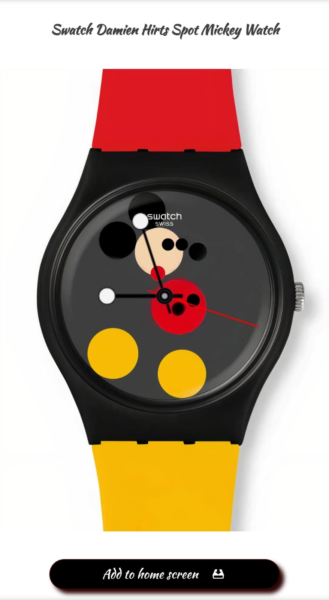
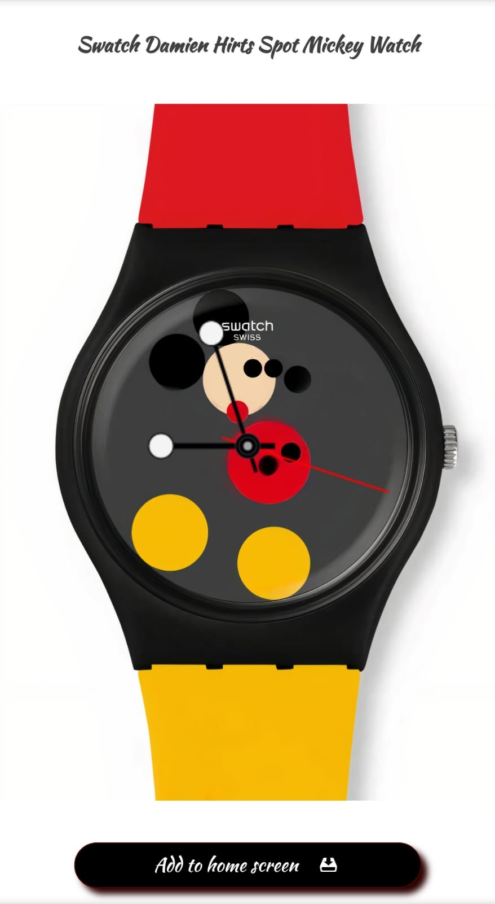
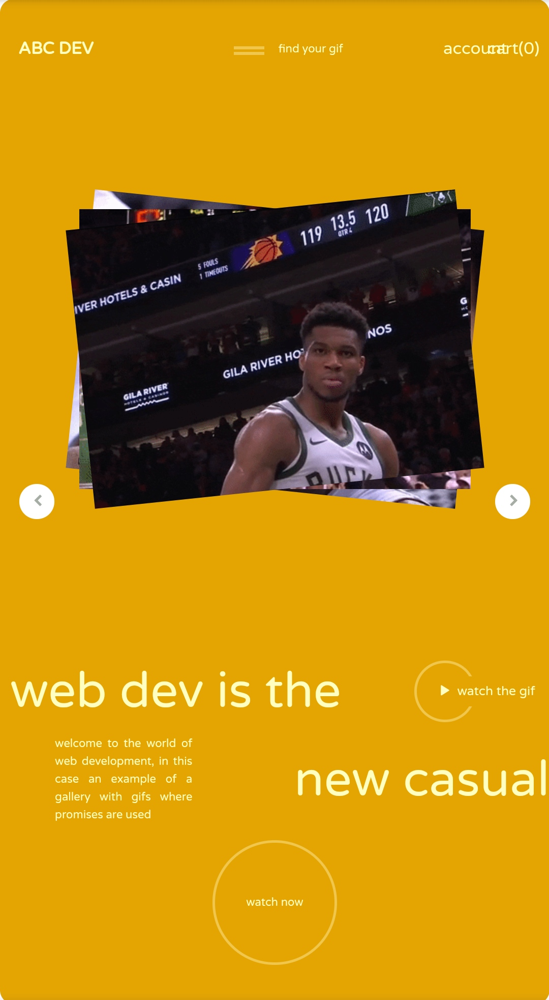
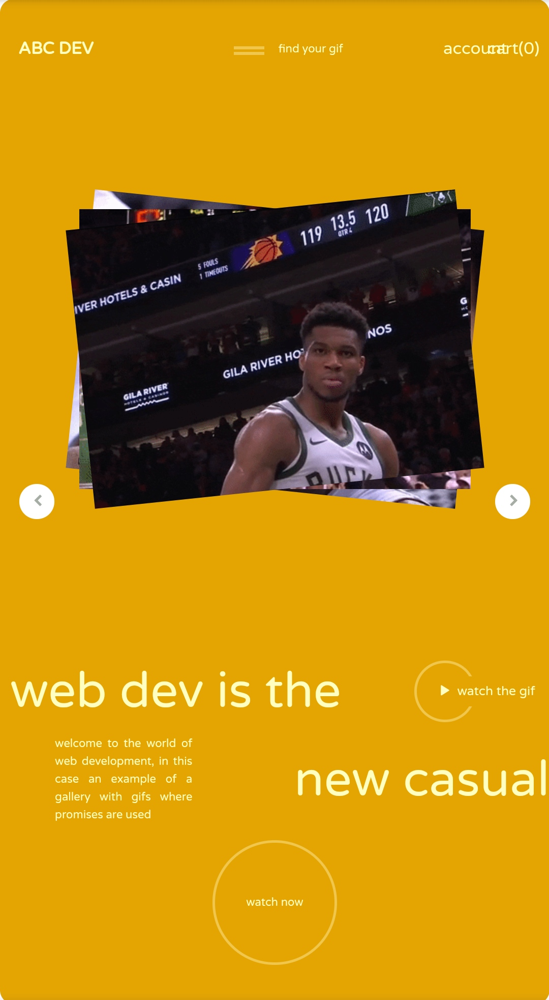

portfolio
This is the portfolio of
Marlin
Gutierrez Rivera
where you can find different projects, implemented with HTML, CSS and Javascript
I'm a web developer
portfolio
This is the portfolio of
where you can find different projects, implemented with HTML, CSS and Javascript
I'm a web developer

Scroll down
You can consult some projects next
In the following sections you can consult some of the projects carried out with HTML, CSS and Javascript. You can find some blog layouts, forms, and many others. All of them can be correctly opened in any device, since they have a responsive design
1. My first Blog
This was the first blog made. Although simple, you can see the different shading techniques, grayscale, etc. applied, which css allows
2. Another blog
In this blog you can see the treatment of HTML properties such as 'hr', which allow to make this beautiful design. It also includes various settings to keep it responsive.
3. A repository
In this design, the first repository in Javascript language was implemented, in it, all forms are validated, taking into account the content that must go in each input, and finally when the data is correct , the details are printed on the screen.
Using the GIPHY API
Two pages are shown that use the GIPHY API. In the first, several animations and transformations were designed that make the page very pleasing to the eye. Only the last 12 gifs of the NBA appear. While on the second page a search engine for gifs was made. Although simple, useful Javascript features such as template literals are used
3. A calc
A calculator with two modes (light and dark) was implemented. Perform operations from basic to complex
 

6. A watch
A clock with the Mickey Mouse design made with canvas that in addition to changing the subject, can be downloaded as an application. Use the local storage and the session storage to keep the theme and know the days since the user connected respectively.
3. A weather app
On this page a weather application is developed using the weatherApi. It has several utilities, among them the information of the time of the city that is chosen, a selector of the cities of Mexico, implemented from scratch. It also has graphs, maps and many more tools.
Copyright @ marlingr7
 
